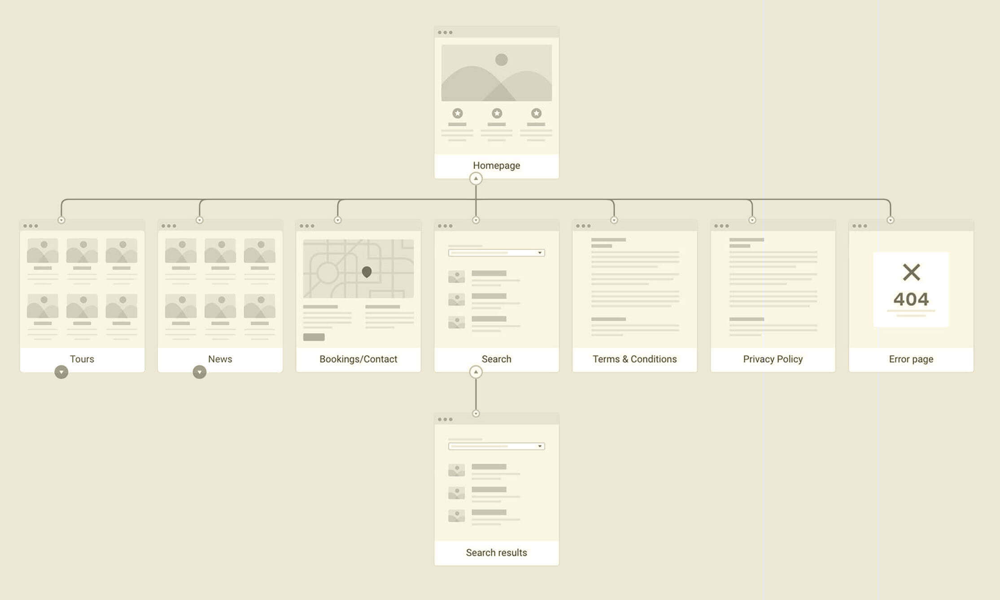
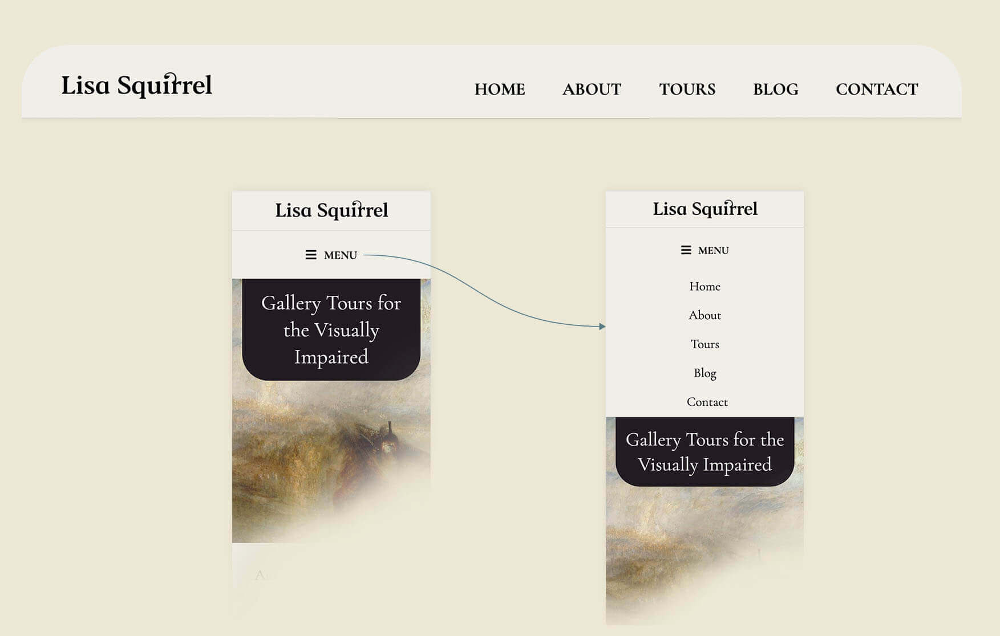
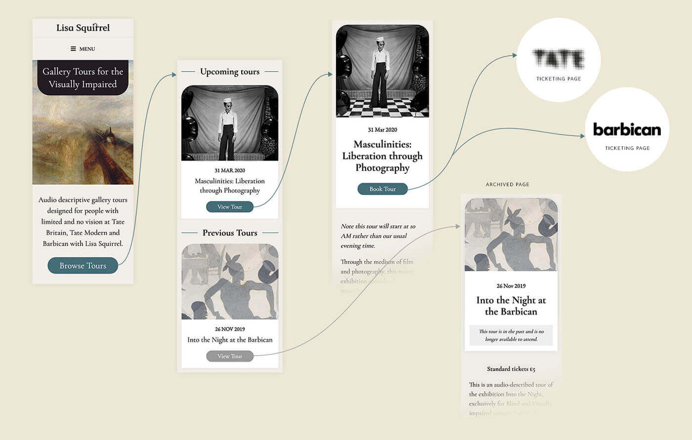

About
Lisa Squirrel hosts and leads tours of art and design exhibitions for visually impaired people, providing detailed audio descriptions of the art works, background on the artists and their historical context, and information about the gallery environment and the curation of the works. Tour locations includes Tate Britain, Tate Modern, and the Barbican, featuring a broad range of artists from Turner to Matisse. Tour experiences are enhanced using tools that appeal to other senses to further enhance the experience for attendees, for example textured, tactile versions of Matisse cut-outs.
As word spread amongst the community, the popularity and demand of her audio guided tours and services soared, leading to the need for a more sophisticated website was required to replace her orignal one-pager.
Designs
homepage

Tour list page

Brief
The main goal is to serve potential attendees who are looking for information on upcoming audio guided exhibition tours, and to book upcoming tours. Archived content from previous tours are publicly available to aid previous attendees.
The secondary function of the site is to promote the tours to museum access managers and curators to highlight importance of ensuring accessibility for those who are visually impaired or blind.
- Design a brand and logo reflective of Lisa's personality and service
- Accessible for the visually impaired
- Ability to book tours
- Integrated blogging system
- Automated newsletter subscription
Team
- ✏️ Michelle Choi — Art Director & Web Designer
- 💻 Emma Andersson — Web Developer
Designing the Brand
Designing the look and feel
"Incorporating Pre-Raphaelite style would mean a lot to me, as it is this art movement, and the Tate Britain which got me started as an art historian, and tour guide."—Lisa Squirrel
Given this direction, we'll work it in with a contemporary and simplified twist which will ensure the site appeals to users or clients who like or work at institutions that focus on more modern art, such as the Barbican.
For this brand, we've incorporated the flora and fauna colours palette, as well as the tunnel shape (rectangle with two rounded corners at the top) into our visual design as a subtle nod to the frame shape of many famous Pre-Raphaelite paintings, including Sir John Everett Millais's Ophelia (1851–2) and Ford Madox Brown, Work (1863).
Logo design
For the font, we’re looking for a beautiful serif font which is easy to read for those with visual impairments, but will look wonderful for those who are sighted. The font has to be strong enough to be clear from a distance and has to work well both digitally and on print.
Building the Website
Accessibility first
Following the guidelines set by the Web Content Accessibility Guidelines (W3C), this website was built with the following criteria:
- Highly contrasting and legibile text
- Screen reader compatitable for visitors
- Navigation and content structure is clear
- Enhanced image alt text descriptions
- CMS that is screen reader compatitable for the editor
Technology
In our pursuit for the ideal CMS for visually impaired users, we came to two popular options; Drupal or WordPress. Both were accessible, but at the time of building, we chose Wordpress as it regularly updated and provided neccessary automation for linking the MailChimp integration for the automated newsletter, and natively included an accessible blogging system.
In our studies, we learnt how screenreaders outputs content and how a visually impaired users uses a site by increasing speed of the reader to digest the page, and interacts with navigations, forms and other web elements prior to the design and build. Before setting off to build the website, we confirmed with the user to ensure the WordPress editor worked well with JAWS screenreader, which she uses most often.
The structure of the website was briefed in and laid out using FlowMapp.
Site map structure
Simple menu
Ticket booking flow
Result
homepage design
Tour list page design
Tour page design

Experiencing in first-person
To test the booking website (as a sighed user!), I made a surprise booking and attended Lisa's tour of Into the Night at the Baribican. At the event, I was pleased to see a gathering of visually impaired art lovers and their assistants enjoying the audio tour, so the website worked as intended.
Her quarterly email newsletters are always a pleasure to read, as it also lets me know that the automation is well oiled and running smoothly.
Thoughts and Takeaways
When we consider web design, our initial and unconcious bias would be to think that it is visual design.
In the UK, there are almost 2 million people living with sight loss. Of these, around 360,000 are registered as blind or partially sighted (RNIB). In 2021, globally, at least 2.2 billion people have a near or distance vision impairment. (World Health Organization)
This was the first project I've worked on which primarily focused on non-visual communication and I feel satisfied with the result thus far. Although the learning curve was steep and a lot of time was spent at the start to familarise ourselves with the world of designing and building for those hard of sight or blind, many things are transferable as good everyday practices.
From writing detailed captions and alt text for images, creating well structured content, and choosing contrasting and legibile information, there's a lot of minor and quick wins a developer and designer can do to make their websites accessible for all.
All these small improvements can help us design and build empathic products for audiences including aging population, as well as those with illnesses which affect sight.